User Guide¶
Introduction to scattering transforms¶
A scattering transform is a non-linear signal representation that builds invariance to geometric transformations while preserving a high degree of discriminability. These transforms can be made invariant to translations, rotations (for 2D or 3D signals), frequency shifting (for 1D signals), or changes of scale. These transformations are often irrelevant to many classification and regression tasks, so representing signals using their scattering transform reduces unnecessary variability while capturing structure needed for a given task. This reduced variability simplifies the building of models, especially given small training sets.
The scattering transform is defined as a complex-valued convolutional neural network whose filters are fixed to be wavelets and the non-linearity is a complex modulus. Each layer is a wavelet transform, which separates the scales of the incoming signal. The wavelet transform is contractive, and so is the complex modulus, so the whole network is contractive. The result is a reduction of variance and a stability to additive noise. The separation of scales by wavelets also enables stability to deformation of the original signal. These properties make the scattering transform well-suited for representing structured signals such as natural images, textures, audio recordings, biomedical signals, or molecular density functions.
Let us consider a set of wavelets 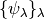, such that
ther exists some  satisfying:
satisfying:
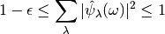
Given a signal  , we define its scattering coefficient of order
, we define its scattering coefficient of order
 corresponding to the sequence of frequencies
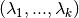 to be
corresponding to the sequence of frequencies
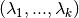 to be
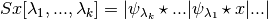
For a general treatment of the scattering transform, see [Mal12]. More specific descriptions of the scattering transform are found in [AndenM14] for 1D, [BM13] for 2D, and [EEHM17] for 3D.
Practical implementation¶
Previous implementations, such as ScatNet [AndenSM+14], of the scattering transform relied on computing the scattering coefficients layer by layer. In Kymatio, we instead traverse the scattering transform tree in a depth-first fashion. This limits memory usage and makes the implementation better suited for execution on a GPU. The difference between the two approaches is illustrated in the figure below.

The scattering tree traversal strategies of (a) the ScatNet toolbox, and (b) Kymatio. While ScatNet traverses the tree in a breadth-first fashion (layer by layer), Kymatio performs a depth-first traversal.
More details about our implementation can be found in Information for developers.
1-D¶
The 1D scattering coefficients computed by Kymatio are similar to those of ScatNet [AndenSM+14], but do not coincide exactly. This is due to a slightly different choice of filters, subsampling rules, and coefficient selection criteria. The resulting coefficients, however, have a comparable performance for classification and regression tasks.
2-D¶
The 2D implementation in this package provides scattering coefficients that exactly match those of ScatNet [AndenSM+14].
3-D¶
Output size¶
1-D¶
If the input is a Tensor of size 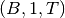, the output of the
1D scattering transform is of size 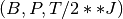, where  is
the number of scattering coefficients and 2**J is the maximum scale of the
transform. The value of depends on the maximum order of the scattering
transform and the parameters
is
the number of scattering coefficients and 2**J is the maximum scale of the
transform. The value of depends on the maximum order of the scattering
transform and the parameters  and
and  . It is roughly proportional
to 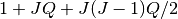.
. It is roughly proportional
to 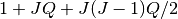.
2-D¶
Let us assume that is a tensor of size 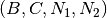. Then, if the
output 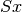 via a Scattering Transform with scale and  angles will have
size:
angles will have
size:
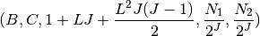
3-D¶
Switching from CPU to GPU¶
When initialized, a scattering transform object is stored on the CPU:
import torch
from kymatio import Scattering2D
scattering = Scattering2D(32, 32, 2)
We use this to compute scattering transforms of signals in CPU memory:
x = torch.randn(1, 1, 32, 32)
Sx = scattering(x)
If a CUDA-enabled GPU is available, we may transfer the scattering transform
object to GPU memory by calling cuda():
scattering.cuda()
Transferring the signal to GPU memory as well, we can then compute its scattering coefficients:
x_gpu = x.cuda()
Sx_gpu = scattering(x)
Transferring the output back to CPU memory, we may then compare the outputs:
Sx_gpu = Sx_gpu.cpu()
print(torch.norm(Sx_gpu-Sx))
These coefficients should agree up to machine precision. We may transfer the scattering transform object back to the CPU by calling:
scattering.cpu()
Backend¶
The scattering transform implementation in Kymatio is structured around a flexible backend framework. These backends encapsulate the most computationally intensive part of the scattering transform calculation. As a result, improved performance can often achieved by replacing the default backend with a more optimized alternative.
The default backend in Kymatio, torch, is implemented in PyTorch. This is
available for 1D, 2D, and 3D. It is also compatible with the PyTorch automatic
differentiation framework.
A more powerful backend, skcuda, relies on scikit-cuda and cupy to
improve performance through optimized CUDA kernels. This backend is available
only in 1D and 2D. It is not differentiable and relies on additional
dependencies to work properly. These may be installed by running:
pip install -r requirements_optional_cuda.txt
To specify which backend is to be used, you may edit the configuration file
found in ~/.config/kymatio/kymatio.cfg. To temporarily switch a backend, you
may use the KYMATIO_BACKEND environment variable, which overrides the
default setting in the configuration file. Alternatively, the backend may be
specified on a per-dimension basis through the KYMATIO_BACKEND_1D,
KYMATIO_BACKEND_2D, and KYMATIO_BACKEND_3D variables.
1-D backend¶
Currently, two backends exist for the 1D scattering transform:
torch: A PyTorch-only implementation which is differentiable with respect to its inputs. However, it relies on general-purpose CUDA kernels for GPU computation which reduces performance.skcuda: An implementation using custom CUDA kernels (throughcupy) andscikit-cuda. This implementation only runs on the GPU (that is, you must callcuda()prior to applying it) and is currently only slightly faster than the defaulttorchbackend. Work to further optimize this backend is currently underway.
2-D backend¶
Currently, two backends exist for the 2D scattering transform:
torch: A PyTorch-only implementation which is differentiable with respect to its inputs. However, it relies on general-purpose CUDA kernels for GPU computation which reduces performance.skcuda: An implementation using custom CUDA kernels (throughcupy) andscikit-cuda. This implementation only runs on the GPU (that is, you must callcuda()prior to applying it). Since it uses kernels optimized for the various steps of the scattering transform, it achieves better performance compared to the defaulttorchbackend (see benchmarks below).
3-D backend¶
Currently, one backends exists for the 3D scattering transform:
torch: A PyTorch-only implementation which is differentiable with respect to its inputs. However, it relies on general-purpose CUDA kernels for GPU computation which reduces performance.
Benchmark with previous versions¶
1-D backend¶
We compared our implementation with that of the ScatNet MATLAB package [AndenSM+14] with similar settings. The following table shows the average computation time for a batch of size 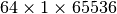:
| Name | Average time per batch (s) |
|---|---|
| ScatNet [AndenSM+14] | 1.65 |
Kymatio (torch backend, CPU) |
2.74 |
Kymatio (torch backend, Quadro M4000 GPU) |
0.81 |
Kymatio (torch backend, V100 GPU) |
0.15 |
Kymatio (skcuda backend, Quadro M4000 GPU) |
0.66 |
Kymatio (skcuda backend, V100 GPU) |
0.11 |
The CPU tests were performed on a 24-core machine. Further optimization of both the torch and skcuda backends is currently underway, so we expect these numbers to improve in the near future.
2-D backend¶
We compared our implementation the ScatNetLight MATLAB package [OM15] and a previous PyTorch implementation, PyScatWave [OZH+18]. The following table shows the average computation time for a batch of size 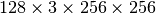:
| Name | Average time per batch (s) |
|---|---|
| MATLAB [OM15] | >200 |
Kymatio (torch backend, CPU) |
110 |
Kymatio (torch backend, 1080Ti GPU) |
4.4 |
Kymatio (torch backend, V100 GPU) |
2.9 |
| PyScatWave (1080Ti GPU) | 0.5 |
Kymatio (skcuda backend, 1080Ti GPU) |
0.5 |
The CPU tests were performed on a 48-core machine.
3-D backend¶
References
| [AndenM14] | J. Andén and S. Mallat. Deep scattering spectrum. IEEE Trans. Signal Process., 62:4114–4128, 2014. |
| [AndenSM+14] | (1, 2, 3, 4, 5) J Andén, L Sifre, S Mallat, M Kapoko, V Lostanlen, and E Oyallon. Scatnet. Computer Software. Available: http://www.di.ens.fr/data/software/scatnet, 2014. |
| [BM13] | J. Bruna and S. Mallat. Invariant scattering convolution networks. IEEE Trans. Pattern Anal. Mach. Intell., 35(8):1872–1886, 2013. |
| [EEHM17] | Michael Eickenberg, Georgios Exarchakis, Matthew Hirn, and Stéphane Mallat. Solid harmonic wavelet scattering: predicting quantum molecular energy from invariant descriptors of 3d electronic densities. In Advances in Neural Information Processing Systems, 6540–6549. 2017. |
| [Mal12] | Stéphane Mallat. Group invariant scattering. Communications on Pure and Applied Mathematics, 65(10):1331–1398, 2012. |
| [OZH+18] | E. Oyallon, S. Zagoruyko, G. Huang, N. Komodakis, S. Lacoste-Julien, M. B. Blaschko, and E. Belilovsky. Scattering networks for hybrid representation learning. IEEE Transactions on Pattern Analysis and Machine Intelligence, ():1–1, 2018. doi:10.1109/TPAMI.2018.2855738. |
| [OM15] | (1, 2) Edouard Oyallon and Stephane Mallat. Deep roto-translation scattering for object classification. In The IEEE Conference on Computer Vision and Pattern Recognition (CVPR). June 2015. |